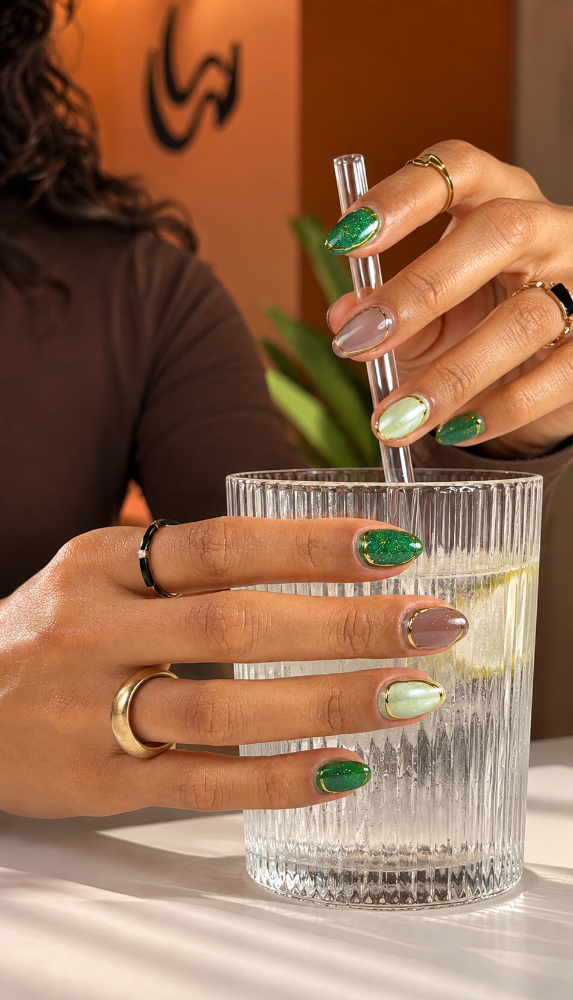
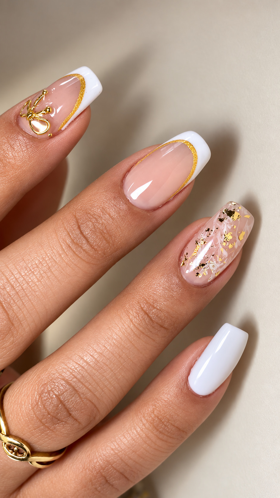
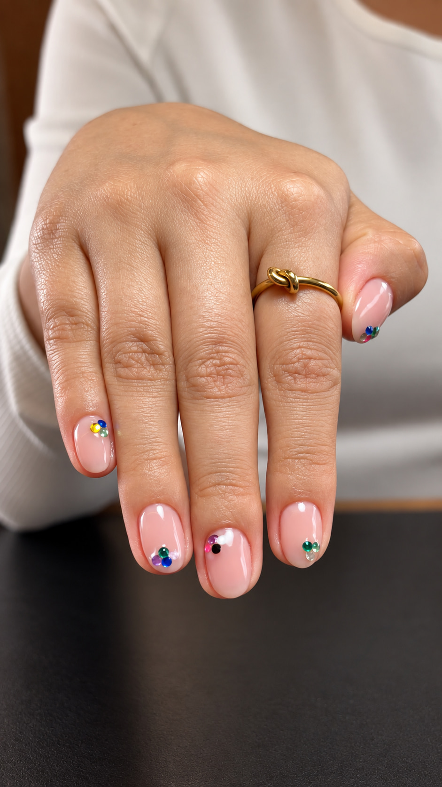
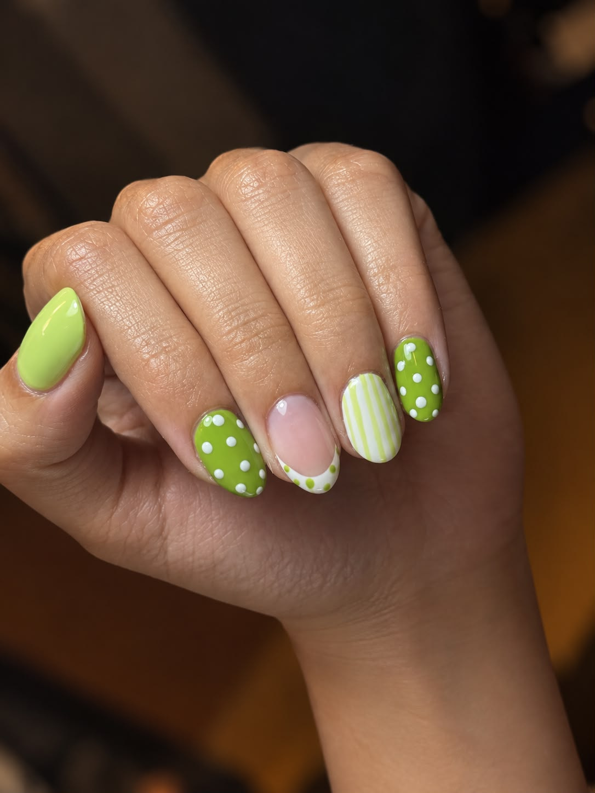
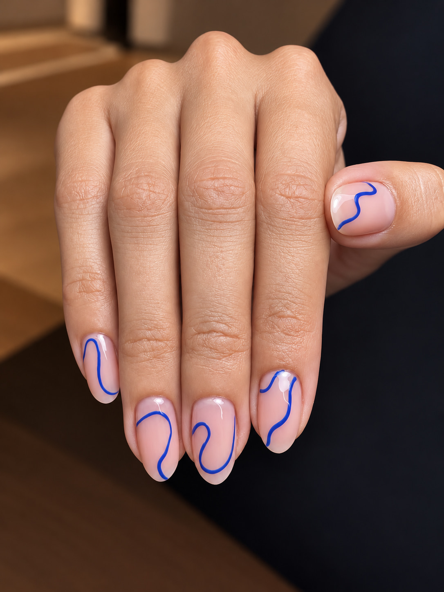
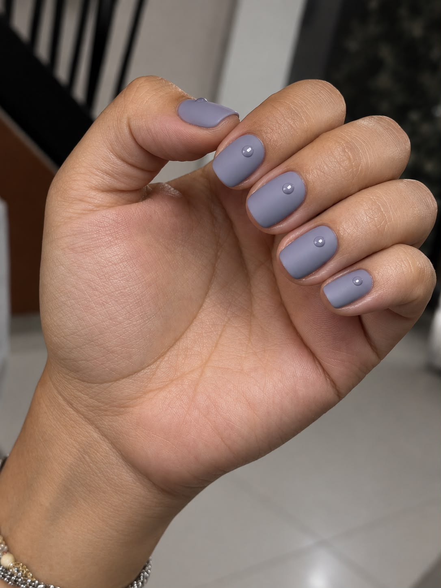
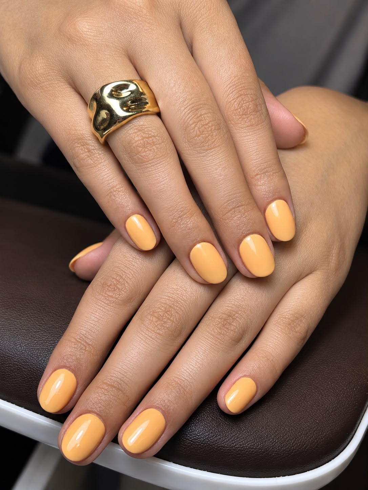

Siete obras. Entrada con reserva.
Verde joya con acentos de cromo.

French con filo dorado y una flor en relieve.

Un cielo en la punta de los dedos.

Tres ideas, una sola mano.

Una línea que no se repite en ninguna uña.

Discreta, hasta que la miras.

Para estirar el verano un poco más.
Reserva tu momento · WhatsApp 311 566 2051
Nueva obra en sala
Vota aquí abajo